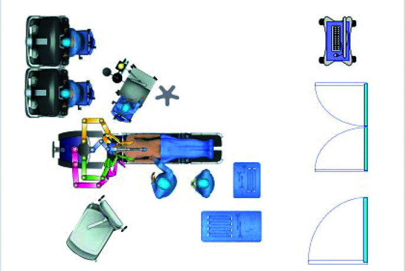

手術方式比較：MIE vs Open vs RAMIE
手術方式概覽
食道切除術 (esophagectomy) 可依手術入路與微創程度分為以下類型：
手術入路 (Surgical Approaches)
| Ivor Lewis (經腹-經胸) |
腹部 + 右胸 |
食道中下段腫瘤 |
最常用，胸腔內吻合 |
| McKeown (三切口) |
右胸 + 腹部 + 頸部 |
食道上中段腫瘤 |
頸部吻合，可清除三區域淋巴結 |
| Transhiatal (經裂孔) |
腹部 + 頸部 |
食道下段/GEJ 腫瘤 |
避免胸腔操作，減少肺部併發症 |
| Left thoracoabdominal |
左胸腹部 |
食道下段/GEJ 腫瘤 |
單一切口入路，目前較少使用 |
微創程度分類
| Open (開放手術) |
傳統開胸/開腹手術 |
| Hybrid MIE (混合微創) |
腹腔鏡腹部操作 + 開放胸腔手術（或反之） |
| Total MIE (全微創) |
胸腔鏡 + 腹腔鏡 |
| RAMIE (機器人輔助) |
機器人輔助胸腔及/或腹腔操作 |
| Single-port MIE (單孔微創) |
單一切口完成手術 |
 微創 vs 開胸手術切口比較
微創 vs 開胸手術切口比較

圖：達文西機器手臂輔助食道切除術 (RAMIE) 腹部階段的手術室配置。圖片來源：Grimminger PP, et al. JSLS. 2022;26(3). CC-BY. 原文：PMC9255263
核心臨床試驗證據
MIRO Trial (法國，2019)
MIRO 試驗是比較 hybrid MIE 與 open esophagectomy 的里程碑隨機對照試驗 (RCT)：
| 主要終點：30 天重大併發症 |
35.9% |
64.4% |
< 0.001 |
| 肺部併發症 (pulmonary complications) |
17.5% |
30.8% |
0.037 |
| R0 切除率 (R0 resection rate) |
相當 |
相當 |
NS |
| 淋巴結清除數 (LN harvest) |
18 顆 |
15 顆 |
- |
| 3 年整體存活率 (3-yr OS) |
58.4% |
相當 |
NS |
| 術後 ICU 天數 |
較短 |
較長 |
< 0.05 |
結論： Hybrid MIE 顯著降低術後重大併發症，尤其是肺部併發症，且不影響腫瘤學治療效果。
TIME Trial (荷蘭，2012)
比較 total MIE (胸腔鏡 + 腹腔鏡) 與 open esophagectomy：
| 術中出血量 (blood loss) |
200 mL |
475 mL |
MIE 顯著較少 |
| 肺部感染 (pulmonary infection) |
12% |
34% |
MIE 顯著較低 |
| 住院天數 (hospital stay) |
11 天 |
14 天 |
MIE 較短 |
| 術後 6 週 QoL |
顯著較佳 |
- |
MIE 優勢 |
ROBOT Trial (荷蘭，2019)
比較 RAMIE 與 open esophagectomy：
| 術後總併發症 (Clavien-Dindo ≥ II) |
59% |
80% |
0.02 |
| 肺部併發症 |
32% |
58% |
0.005 |
| 功能性恢復中位天數 |
11 天 |
14 天 |
- |
| 疼痛評分 (術後 Day 14) |
顯著較低 |
- |
< 0.05 |
| R0 切除率 |
相當 |
相當 |
NS |
綜合比較表
手術指標比較
| 手術時間 (operative time) |
4-5 小時 |
4-6 小時 |
5-7 小時 |
| 術中出血量 (blood loss) |
300-500 mL |
150-300 mL |
100-250 mL |
| 淋巴結清除數 (LN harvest) |
15-20 顆 |
18-25 顆 |
20-30 顆 |
| R0 切除率 |
92-98% |
92-98% |
93-99% |
| 轉換為開放手術 (conversion rate) |
N/A |
5-15% |
3-10% |
術後結果比較
| 肺部併發症 |
25-40% |
10-25%（↓14-65%） |
10-20% |
| 吻合口滲漏 (anastomotic leak) |
8-15% |
8-15% |
5-12% |
| 聲帶麻痺 (RLN palsy) |
5-15% |
5-15% |
3-10% |
| 乳糜胸 (chylothorax) |
2-5% |
2-5% |
2-5% |
| ICU 天數 |
3-5 天 |
1-3 天 |
1-3 天 |
| 住院天數 |
10-14 天 |
7-10 天 |
7-10 天 |
| 30 天死亡率 (30-day mortality) |
2-5% |
1-3% |
1-3% |
| 90 天死亡率 |
4-8% |
2-5% |
2-5% |
長期腫瘤學結果
| 3 年整體存活率 (3-yr OS) |
50-60% |
55-60% |
55-65% |
| 5 年整體存活率 (5-yr OS) |
35-45% |
35-50% |
40-50% |
| 3 年無病存活率 (3-yr DFS) |
40-50% |
40-55% |
45-55% |
| 局部復發率 |
相當 |
相當 |
相當 |
GRADE 證據等級： MIE vs Open 的短期優勢（肺部併發症、住院天數）已達 高品質證據 (high quality)；長期腫瘤學結果為中等品質證據 (moderate quality)，MIE 至少不劣於 Open。
手術量-結果關係 (Volume-Outcome Relationship)
食道切除手術是外科領域中，手術量與治療結果關聯最強的手術之一：
醫院手術量與死亡率
| < 5 例 |
16-23% |
高 |
高 |
| 5-24 例 |
8-12% |
中 |
中 |
| 25-59 例 |
5-8% |
中低 |
中低 |
| ≥ 60 例 |
3-5% |
低 |
低 |
Volume-Outcome 的關鍵指標
- 高手術量門檻 (high-volume threshold)：國際建議為每年 25 例以上
- 最佳預後門檻：每年 60 例以上
- 手術量影響的不僅是死亡率，還包括：
- 併發症的早期辨識與處理能力 (failure to rescue)
- 住院天數
- 再入院率 (readmission rate)
- 長期存活率
外科醫師個人手術量
- 個別外科醫師的年手術量同樣影響預後
- 建議個人年手術量至少 10-15 例
- 高手術量醫師的學習曲線通過更完整
學習曲線 (Learning Curve)
傳統微創 MIE
- 一般認為需完成 30-50 例 才能穩定通過學習曲線
- 主要挑戰：胸腔鏡下淋巴結清除、吻合技術
- 建議由高手術量中心的資深醫師指導訓練
RAMIE
- 學習曲線約 20-30 例（部分研究認為更短）
- 機器人系統的直覺操控與 3D 視野有助於縮短學習曲線
- 但需額外學習機器人系統操作與 troubleshooting
- 建議接受結構化的機器人手術訓練課程
影響學習曲線的因素
- 既有的開放食道手術經驗
- 腹腔鏡/胸腔鏡基礎技術
- 手術量集中化程度
- 指導教師的經驗
- 是否有結構化訓練計畫 (structured training program)
MIE 轉換為開放手術 (Conversion to Open)
轉換率 (Conversion Rate)
- 傳統 MIE 轉換率：5-15%
- RAMIE 轉換率：3-10%
- 隨著經驗累積，轉換率逐漸降低
常見轉換原因
- 嚴重沾黏 (severe adhesions)
- 術中出血無法控制
- 腫瘤侵犯範圍超出預期
- 解剖變異或辨識困難
- 設備故障（尤其 RAMIE）
轉換的臨床意義
- 及時轉換為開放手術是安全的決策，不應視為「失敗」
- 不及時轉換可能導致嚴重併發症
- 術前應充分告知患者轉換的可能性
特殊考量
RAMIE 的優勢場景
- 肥胖患者 (BMI > 30)
- 術前化放療後的纖維化組織
- 狹窄術野中的精細淋巴結清除
- 食道上段腫瘤（McKeown 路徑）
微創手術的禁忌或相對禁忌
- T4b 腫瘤侵犯主動脈或氣管
- 嚴重胸腔沾黏
- 不耐受單肺通氣 (one-lung ventilation)
- 部分嚴重心肺疾病患者
ROBOT-2 試驗（進行中）
| 設計 |
多中心隨機對照優越性試驗 |
| 比較 |
RAMIE vs MIE（胸腹腔鏡微創） |
| 對象 |
可切除之食道或食道胃接合處腺癌 (cT1-4a, N0-3, M0) |
| 人數 |
218 人（RAMIE 109 vs MIE 109） |
| 主要終點 |
依 TIGER 分類之淋巴結清除總數 |
| 次要終點 |
手術成效、併發症、存活率、成本效益 |
| 假說 |
RAMIE 可達到更佳的淋巴結清除 |
| 狀態 |
收案進行中，結果預計 2026-2027 年發表 |
此試驗將提供 RAMIE vs MIE 的首個大型 RCT 證據，有望釐清機器人手術在食道癌治療中的定位。
未來發展方向
- 單孔微創食道切除術 (single-port MIE)：台大醫院已有先驅經驗
- 螢光導航手術 (ICG fluorescence-guided surgery)：吻合口血流評估、淋巴結定位
- 人工智慧輔助 (AI-assisted surgery)：術中即時影像辨識
- 增強實境 (augmented reality)：術中解剖結構定位
- 新一代機器人平台：Ion 系統等
- ERAS (Enhanced Recovery After Surgery)：加速康復外科協定的標準化應用
↑